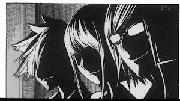
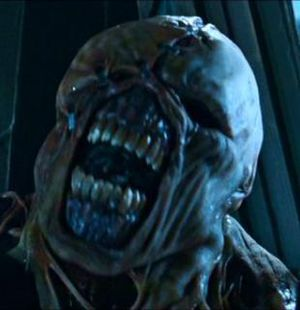

Bakuman
 De: La Frikipedia, la enciclopedia extremadamente seria.
De: La Frikipedia, la enciclopedia extremadamente seria.
| De la serie anime para todos:
|
| Bakuman
|
|
|
| Género:
|
Shônen, Seinen, Vida sana, comedia, romance, Shôjo, Hentai, Gore, Hard Gore, Hard Rock, Rock & Roll.
|
| Episodios:
|
25 en la primera temporada, 25 en la 2da, y 25 en la 3ra... 25+25+25 = 75
|
| Autor del manga:
|
Tsugumi Ōba y Takeshi Obata
|
| Publicación:
|
Octubre 2010
|
| Publicado en:
|
La Shōnen Jump
|
| Director del anime:
|
Benito Carlos del León
|
| Transmitido en:
|
DVD Pirata y en páginas de Internet
|
| Ovas:
|
Solo "Tsugumi Ova"
|
| Películas:
|
Nel.
|
| Notas
|
Sea Mangaka en 30 días ¡¡O LE DEVOLVEMOS SU DINERO!!
|
«Caw! Caw! YAAAAAA!! Uh! Si... oh, oh, mas duro! oh! mas duro si ahhh... dale, dale, mas! mas rápido!! más!! Si, Siii... Siiiiiiiiiiii...! »
~ Niizuma Eiji dibujando manga.
«Hasta que nuestros sueños se cumplan...»
~ Azuki Miho diciendole a Mashiro cuando follarán.
«¿Ves el cádilac que está estacionado enfrente? Pues es del editor en jefe y le eh rayado sus puertas y ventanas diciendo que fuiste tú. Si no quieres que te rompan el orto, págalo dibujando manga.»
~ Koji Yoshida con una de sus tácticas para hacer que Hiramaru dibuje manga.
«Tendremos un anime antes de los 18...!!!»
~ Mahiro Morikata 10 años antes de que porfín logren tener un anime, a sus 24 años.
«Incluso por un momento voy arder tan caliente y rojo, que deslumbraré a todos... y todo lo que quedará serán blancas cenizas puras...»
~ Takagi Akito Sobre cómo será su luna de miel con Myoshi.
Esta historia está basada puramente en echos reales, cualquier parecido con la ficción, es pura coincidencia...
Bakuman u Hombre-Baku en español, es un conocido plagio del anime Bakugan, fue creado por Tsugumi Ōhba y Takeshi Obata (TOTO para abreviar) reconocidos por su obra "Mil y un maneras de morir con Death Note" publicado en la revista Shonen Jack Yump. Bakuman Fué publicado el 8 de Agosto del 2008 (8-8-8 El número del Anti-Anti-Cristo) y trata sobre dos chinos drogadictos llamados Mashiro Surikata y Takagi Aki toy, decididos a hacer manga, obtener un anime, casarse y ser los putos amos mejores mangakas del mundo. Todo eso, antes de cumplir los 18 años... Sí, asi de fácil.
Argumento
Se basa en la vida y obra de Mashiro Surikata, un estudiante de Jakuna matata, que tiene la tendencia de dibujar a las personas desnudas en su libreta. Un día se encontraba dibujando a la chica de su lado, Miho Azuki, y es allí donde Takagi Aki toy descubre su mórbido secreto. Luego de salir de clases, caminar 4 kilómetros 1/2, tomar dos autobuses, llegar a su casa y sentarse en su habitación, Mashiro se da cuenta que a olvidado su libreta en el cole, por lo que decide regresar por ella. 5 horas después, llega al cole y descubre que Takagi estaba esperándolo en el salón con su libreta en manos. Éste encabronado, lo chantajea diciéndole que se la devolverá a cambio de que acepte crear un manga hentai con él, ya que Takagi dibuja como el orto no dibuja muy bien y necesita de sus dibujos. Mashiro cortésmente rechaza su oferta argumentando que ser mangaka es un dolor de huevos mucho trabajo. Takagi lo acojona diciendo que si no acepta le mostrará su libreta a Miho, entonces allí si acepta y se hacen mejores amigos, cómo la ves; Takagi estaba tan emocionado que necesitaba contárcelo a alguien, así que cerca de la media noche llama Mashiro a que lo acompañara para ir a desírcelo a Miho, llegando a su casa toca 10 veces seguidas el timbre, Miho sale y sucede lo siguiente:
Takagi: Hola
Miho: Hola
Takagi: Supe que querias convertirte en Seyu, Mashiro y yo haremos un manga juntos para que se convierta en anime y así tu puedas ser la voz de la protagonista!!
Miho: ¿Quiénes son ustedes?
Mashiro: Cuando eso suceda ¿¿¡¡TE CASARÍAS CON MIGO!!??
Miho: ¿QUE?
Mashiro: ...
Miho: ...
Takagi: ...
Miho: ¿¿Que es lo que quieren??
Mashiro: BIEEENNN...!!! Entonces nos casaremos cuando nuestros sueños se cumplan!
Miho: Eh?
Takagi: Bueno chao
Mashiro: Chauuu...
Miho: Bueno... adiós... quien... quiera que sean...
Y así comenzó la batalla por el sueño de dos corazones enamorados y la lucha por superar a animes como Dragon ball o Wan Piz, que los llevara a darse ostias contra otros mangakas de la Shonen Yump.
Ashirogi Muto
Mashiro en su mejor momento.
Conocidos por ser los únicos 2 fríkis que NO QUIEREN DOMINAR AL MUNDO, ambos juegan a ser Dioses creando vida y realidades mas fumadas que la pipa de la paz. Sueñan con ser los mejores mangakas del universo (del manga). Mashiro hace las ilustraciones y Takagi se la jala piensa el argumento. El seudónimo "Ashirogi Muto" viene de "A" de Azuki, "Shiro" de MaSHIRO, "gi" de TakaGI y muto de... de... Mutosicletas! si, ya que es bien sabido que a los mangakas les gustan mucho las mutosicletas... las adoran.
Utilizaron ese seudónimo porque... ¿¿Quién querría usar su propio nombre?? cuando puede inventarse un alias tan chulo como ese!. Su editor fue el ninja Hattori, y comenzaron con un wanshot llamado "100,000,000 de minutos" nombrado así, porque fue lo que le tomó a Takagi inventarle un título. Después de esto, probaron con "Dinero e Inteligencia" (Que friki no querría) y finalmente fueron serializados para proseguir con su manga "Detective conan Trap."
Autores
Famoso por dibujar la mona lisa de Davinci, ilustrar las páginas centrales del Códex del Diablo y dibujarse los dibujos dibujados de Death Note, es el segundo autor de ésta magna obra. Sus fantasías sexuales son los shinigamis, y en 2006 fue arrestado y sentenciado a muerte por un cuchillo de mantequilla que llevaba en su carro.
Una mujer sosteniendo una manzana.
Experta en escribir mangas puramente de peleas y acción al 100% estilo Shonen, es reconocida por haber escrito La divina comedia de Dante, el Necronomicón, Death Note y el reglamento entero de los francomasonitas. "Tsugumi Ohba" es un seudónimo de un tío o tía que no quiere dar la cara por miedo a que alguien posea una Death note real, no se sabe a ciencia cierta su identidad ni sexualidad, aunque en unos comunicados de prensa, utiliza el avatar de una chica sosteniendo una manzana. Nadie lo a visto, ni siquiera Dios, pero hay quienes decían que se trataba de un hombre, otros que de una mujer, otros especularon que en realidad era una mujer transexual lesbiana que se hacia pasar por un hombre afeminado bisexual. Otros dicen que Tsugumi Ohba no existe y que solo es un invento del gobierno y la policía como excusa para matar criminales.
Cuando Ohba se juntó con su editor para presentarle el argumento de Bákuman, le dijo lo siguiente: "Quiero crear un manga, que trate sobre sobre 2 chicos que crean un manga, que trata sobre 2 chicos que crean un manga, que trata sobre 2 chicos que crean un manga, que trata sobre 2 chicos que crean un manga, que trata sobre 2 chicos que crean un manga, que trata sobre 2 chicos que crean un manga, que trata sobre 2 chicos que crean un manga, que trata sobre 2..."
Entonces el editor se fue y la dejó hablando sola. LLegó a Taco Bell y compró pollo frito y un café expreso doble origen guatemalteco; Cuando el editor regresó de compras, Ohba aún seguía diciendo: "Que crean un manga, que trate sobre 2 chicos que crean un manga, que trata sobre 2 chicos que crean un manga, que... -Acto seguido, el editor le arroja su café hirviendo en la cara, le pega una cachetada y le dice "BIEN! HAS TU PUTO MANGA YA LOCA DE MIERDA...!"
Y así fué como nacería Bakuman.
Personajes
Mangakas
¿On ta bebeee...? AKI TOYYY!!!.
- Mashiro Morikata Nombre real: Mashiro Surikata, de la dinastía surikata. Alias "El saiko" es el típico friki que se pasa las tardes jugando Angry Birds, acostumbra dibujar a las gentes desnudas y dejar olvidadas las libretas en clases. Junto con Takagi, son hermanos de leche. Mashiro desde pequeño admiraba a su tío Minoru, un apostador de las vegas quien tras perder su dinero y virginidad allí, decidió convertirse en mangaka para luego morir trágicamente de suicidio. Mashiro sigue sus pasos, al querer ser el mejor mangaka y luego morirse de la misma forma que él. Mantiene una relación con su novia Azuki Miho, a quien ve todo los días, la besa todos los días y la folla todos los días, pero solo en sus sueños, porque en realidad hicieron un pacto con el Diablo el cual dictaba que no podían verse, hablarse ni follarse hasta que sus sueños se hicieran realidad, por lo que su relación es a distancia. Le pidió matrimonio a Miho de la forma mas romántica posible, tras unos segundos de haberle hablado por primera vez.
- Takagi Akito Alias "El Shujin", Mashiro lo apoda de esa manera ya que en japones "shujin" y su nombre, son sinónimos de cierto animal. Se pasa los días enteros fumando granola caducada, para que se le puedan ocurrir buenos argumentos. Quería ser famoso y reconocido, pero todo eso se fue a la mierda al ponerse un seudónimo, nadie lo reconoció. La meta de Takagi aki toy, es simplle: Mucha fama, mucho dinero y muchas putas. Es del tipo calculadora, argumenta que, como no puede cantar, no será cantante. Como es mas feo que el orto, no será actor. Su polla es como un meñique del pie, por lo que tampoco será actor porno, y en los deportes
es una mierda no es muy bueno, tampoco será deportista. (Mira que prodigioso nos salió el chico) Entonces ya que el manga ahora es un fenómeno mundial, se hará rico y famoso escribiendo caricaturas chinas. Mantiene una relación con Miyoshi Kaya, una aventura con Aoki Yuriko y relaciones carnales con Aiko Iwase.
- Niizuma Eiji Es el mangaka mas rápido del oeste. Niizuma, niiresta, niimultiplica, niidivide, pero si dibuja, y de lo lindo. Para él, la experiencia de dibujar manga lo lleba a tener ciertas sensaciones, por lo que siempre anda con ganas de
follar dibujar. Se dice que es el mangaka con mas FUA en el mundo, deecho es llamado por los editores como: Niizuma "El FUA" Eiji, tiene tanto FUA que incluso es capaz de dibujar manga estando dormido y ser el mejor de todos, superando al puesto numero #1 con en el puesto #0. Para que te hagas una idea, él es el Chuk Norris de los mangakas. Su personalidad es como la de Niizuma Eiji de Bakuman, lee manga, dibuja manga, sueña manga, come manga, fuma manga, inhala manga, se inyecta manga y es alcohólico. Fue serializado por su manga "Yellow Kitty" y la editorial le ordeno dibujar los primeros capítulos de éste, pero a Niizuma le importó un carajo y dibujó a CROW. Es el principal rival de Ashirogi Muto y tiene muchas, muchas fans alrededor del mundo, por ser el único mangaka de la Shonen Yump... que es virgen.
- Fukuda Shinta Alias el "FuckYou da Shinta", Es temperamental, impulsivo, impaciente
un hijo de puta bien hecho y por eso tiene el cabello lleno de canas por lo que lo cubre con un pañuelo, si le mensionas algo al respecto éste siempre te responderá con "Fuck You Bitch!", aunque lo estés felicitando por su cumpleaños, su respuesta es siempre la mísma. Famoso por su manga "The Dark Night" es uno de los rivales de Ashirogi Muto, y posteriormente crearía un manga de mutocicletas. (¿Ven como como adoran las mutocicletas?) Y siempre es el único que tiene los huevos de hacer las cosas. Es el único mangaka que parece normal.
- Shizuka Ryu Alias "El Anonymous", Shizuka (no la novia de nobita) es un Gay-mer adicto a los videojuegos, tiene un trastorno de ansiedad social por lo que no conversa con ningún ser vivo en la faz de la tierra, a menos que sea por internet. Es el único capaz de llegar al nivel DiosDeFrikipedistas. Famoso por su manga "El show de TRUMAN", Shizuka se hizo adicto a ciertos clubes nocturnos, tras emborracharse de lo lindo en uno de esos lugarcillos (Si, tu ya sabes cuales, garañón) a los que su editor frecuenta. Éste decidió llebar
de putas a divertirse un rato a Shizuka, de forma que esto lo ayudara un poco a su personalidad.
- Kazuya Hiramaru Es un neurótico, bipolar, perezoso y pesimista, odiaba su antiguo trabajo y mísero sueldo como admin de frikipedia, por lo que renunció. Al encontrarse un número de la Shonen Yump en el metro, se inspiró para ser mangaka al pensar que le pagarían tan solo por hacer dibujitos... (
la puta madre que lo parió) descubrió que no es tan fácil hacerlo. Usualmente se escapaba de su apartamento y de su editor para no seguir trabajando, pero éste siempre le encontraba y hallaba la forma de manipularlo o chantajearlo para que dibujase manga. Su manga "Otter 11" que trata sobre un Wombat manos de piedra tubo su fama y fue serializado en manga, ahora Hiramaru tendría que dibujar semanalmente con lo que se le acababan las ganas de vivir al pobre. Estaba enamorado de Aoki Yuriko quien le levantaba la polla el ánimo para seguir dibujando y mantenerse al nivel de ella.
- Aoki Yuriko Es una chica con miedo a los hombres (Con esta lista de subnormales, quien la culparía) trastorno conocido como Polla-fobia, escribió "Knocking on heaven's Door" y por un tiempo estuvo involucrada con Takagi. Mantiene al pobre de Hiramaru en la friendzone, hasta cierto punto de la historia donde al fín acepta
follar salir con él por lástima. (Aunque ella tampoco tenía mucho éxito que digamos) Siempre hay un roto para un descocido, luego se casarían y tendrían pequeños wombats con manitas de piedra, pero como esto es spoiler, dejaremos que sigas leyendo el resto del artículo.
Mangakas del mal
Solo mira ese cabello rojo... Maldad pura.
Una de las victimas de Nanamine.
- Shun Shiratori En todo buen manga tiene que haber un zoofílico, y éste no es la excepción. Shun y su mascota
sexual Paz, se escaparon de su casa ya que su familia lo rechazaba por ser gay y zoofílico mangaka, y por consiguiente, termina en las calles viviendo de lo que gana al hacer malabares con las ratas de las alcantarillas.
- Aiko Iwase La hermana perdida de Takada de Death Note. Es capaz de criticar a la polla en la cama; excompañera del Takagi, viene de los lugares mas bajos y de mala muerte del mundo. Intentó arrimarse con takagi, y no pudo. Intento arrimarse al Ninja Hattori, y no pudo. Intento seducir a Niizuma con un buen escote y un par de copas de champán, pero éste le hace mas caso al manga que a ella, y no pudo. En un momento dado, llegó a tomar la decisión de suicidarse... Y no pudo. Al final todo siguió bien, su manga +Natural de Palmolive Naturals® tubo el honor de contar con los dibujos del gran Niizuma, para superar al Takagi... ¿Y QUE CREES...? No pudo.
- Koji Makaino Es un RockPopero o Ropero para abreviar, escribió el manga "ColorFecal" y le pidió a sus fans que le echaran una manita con su manga en las encuestas de popularidad de la Shonen, a cambio, éste prometió que si ganaba, le quebraría el culo a Justin Bieber con su guitarra... Gano las encuestas con
 de votos en total. Al final, no cumplió su promesa y poreso está entre los malvados.
de votos en total. Al final, no cumplió su promesa y poreso está entre los malvados.
- Tooru Nanamine Es el mangaka mala leche, trabaja como repartidor de Domino's Pizza (Ya con esto sabes que es malvado) que a primera vista es un chico bueno, alegre y muy social, pero en el fondo en realidad es un hijo de puta mas malvado que Kira, es tan malo que es capaz de rellenar una Nuéz con cianuro y dárcela a una ardilla solo para verla sufrir. Este soviético comenzó siendo un fan de Ashirogi Muto, presentando un manga llamado "Clase 406". Juntó a un puñado de frikis en Taringa y los usaba para sacarle todas las buenas ideas para su manga y así quedar como el puto amo de las encuestas. Éste se lo confesó a Ashirogi Muto pero entonces ellos juraron matarlo si volvían a verlo. Desde entonces la única meta de Tooru es competir contra Ashirogi Muto, superar a Ashirogi Muto, follarse a Ashirogi Muto y un largo etceeetera terminando siempre en "Ashirogi Muto".
Asistentes
- Shoyo Takahama Uno mas de los subnormales que aparecen a lo largo de la serie. Es un antisocial que comenzó trabajando como asistente de Ashirogi muto, pero su sueño es trabajar para Disney (Carajo, debió estar con los malvados).
- Natsumi Katou Típica Colegiala con gafas redondas del anime. Como cosa rara, es la única otaku que aparece en esta serie. Tiene un par de lupas en lugar de lentes y su meta es, follarse a Mashiro en cuanto éste se duerma por agotamiento.
- Orihara Ichiriki Éste es el Matsuda de Bakuman. Antes de ir a trabajar como asistente, se inhala un par de rayas de censurado y poreso siempre se ve tan alegre y enérgico. Su meta es escribir un manga del cual solo Dios sabe de que tratará.
Y los otros
Miyoshi cuando está en sus días.
- Miho Azuki Amor de lejos, amor de pendejos. Miho alias "La montaña rusa" todos la usan, menos el dueño... Es la "novia" del Surikata, se hace pasar por niña buena pero en realidad solo lo usa como una póliza de seguro, para mientras hacerse la vida loca, arrimándose con los mas populares de la secundaria, de la preparatoria, de la universidad y del trabajo. (Porqué crees que no quería que Mashiro ni la llamara?) Inocentemente cautivadora, adorablemente Calientapollas. Finalmente cuando sea una super seyuín fase 3, hará la voz de la
cocaína heroína del anime de Ashirogi Muto.
- Kaya Miyoshi Mejor amiga de la calientapollas. Miyoshi la novia del Takagi, tiene mas piojos que neuronas, acostumbra darle ostias a su novio, y su sueño en la vida fue hacer pequeñas historias para celulares, escritas por su novio;
Que buen par de... ojos tiene.
- La mamá de Miho Alias "La estufa de leña" vieja, pero calienta. Tiene dos grandes, lindos y redondos ojos. Durante su juventud tuvo un amorío con Nobujiro, el tío de Surikata, lo que los convertiría a Miho y Mashiro en primos! =O
- Nobujiro Mashiro "O eres un genio o un apostador" el lema de Nobujiro antes de ir a las vegas. Famoso por crear a Ultraman, fue quien inspiro a la pequeña surikata a volverse mangaka, pero todo se esfumó cuando éste murió de causas naturales, después de suicidarse. La razón del homisidio-autoimplicado fue que perdió su única mutosicleta por sus deudas en las vegas, un mangaka no podría vivir así.
- Hidemitsu Ishizawa ¿¿Quién carajo es ese?? Oh! claro, su único rol en la serie fue recibir una ostia de Takagi por haberle dicho que le gustaba Mashiro, y él lo golpeó por putazo. Aparace de nuevo en la serie para cagarla ya que al parecer, es su única función.
Mangas dentro del Manga
(Puestos dentro de una tabla para que se vean mas bonitos...)
| Autor/a/es
|
Obra
|
Descripción
|
Y la imagen
|
| Ashirogi Muto
|
Dinero e Inteligencia
|
"Mas vale bonito, rico e inteligente... que feo, pobre y gilipollas" es la filosofía de éste retorcido manga. ¿Que es lo mas importante en la vida? Seguramente amor, sueños, felicidad... ¿verdad? FALSO!! En la vida solo importa el dinero, la apariencia y la inteligencia, y aquí en un mundo donde se puede vender la inteligencia y pensamientos por dinero, entre mas inteligencia poseas, mas poder tendras... ¿QUE LOCO, NO?
|
Dinero, apariencia e inteligencia... Alabado sea el señor. |
| Ashirogi Muto
|
Detective Trap
|
Se trata de un detective privado que cobra millones de yens por caso, pero que lo hace de gratis si la heroína lo calienta se lo pide. (Ésta es una calientapollas igual de la que está inspirada). Atrapando a los gilipollas que caen en sus trampas.
|
Típico villano de Detective Trap. |
| Ashirogi Muto
|
Tanto
|
Es un manga de "comedia" que solo sus autores entienden. Trata sobre un científico loco pederasta que hace experimentos con su sobrino... ¿o era su nieto? El punto es, que invento a un perro/mono cosa con tecnología Nazi que siempre acompaña a Tanto, un chico con peinado en forma de culo. (o de tetas, según sea tu gusto)
|
Tanto cuando se hace adulto. |
| También de Ashirogi Muto
|
PCP
|
Se trata de tres amigos que trafican con esclavos, marfil, oro, pero sobretodo pornografía zoofílica y necrofílica. Hacen videos en RedTube de como asesinar descontroladamente a niños de corta edad en una guarderia pública y sin parecer que padeces el síndrome de Yuno Gasai.
|
 Su siguiente víctima sera IP anónima. |
| ¿Adivina que?
|
Reversi
|
Es el Death Note dentro del manga, trata sobre 2 demonios racistas, uno blanco y el otro negro afroamericano. El protagonista es un depravado mental que tiene el fetiche de lavar cerebros a gente ajena. Incluso puso una lavandería para ello, asi el prota puede hacer que todos piensen como el, para que el mundo sea dominado por puros frikis.
|
 La eterna batalla entre la luz y la oscuridad. |
| Niizuma Eiji
|
Crow
|
Protagonizada por Brandon Lee, basado en el poema de Edgar Alan Poe. Trata sobre un tío mitad cuervo, que tiene que salvar al mundo de... de... Comadrejas cíclopes! por qué no... Su arma es una pluma gigante de 2 metros (Solo Dios sabe a que animal se la arrancó), típico héroe de la Shonen, el manga mas popular en las encuestas.
|
|
| Niizuma Eiji
|
Zombie☆Gun
|
Enfrenta una demanda de 900,000,004 Chuck dólares, por haberle plageado la estrellita a Black☆Rock Shooter. Trata sobre un joven infectado por el virus T, pero éste a medio sobrevivido a la infección, por lo que es medio subnormal y que lucha por ser un humano de nuevo, para poder estar con su único amor... (adivinaste, otra calientapollas.)
|
 Mitad zombi, mitad subnormal. |
| Hiramaru Kazuya
|
Otters 11
|
Trata sobre un hombre mitad Wombat que sufre un accidente en sus manos por hacerse una paja, ya que es bien sabido que la chele de Wombat es un derivado del ácido, tipo la sangre de alien. Entonces le hacen una cirujía y le colocan dos enormes rocas en lugar de manos (mira que convencionales) y así vive, rompiéndole la madre a todo aquel que lo mire feo, viviendo una desdicha igual que su creador Hiramaru, el hombre es explotado usándolo en comerciales como vendedor de Diafragmas. En una escena del manga, conduce un camión y lo estrella en la televisora sakura durante el secuestro del segundo Kira.
|
Por favor, di no a las drogas. |
Takada Aiko Iwase
|
+Natural
|
Es el manga mas natural de todos, +Natural con Palmolive naturals®, trata sobre unos monstruos digitales que nacen de un huevo digital, puesto por un... niño elegido para cuidar de ellos y ellos a su protector la trama de la historia se da en el año 1999 donde se distorsiona el mundo digital y el mundo real donde los digital mosters salen y causan cambios en el clima y
los 8 niños elegidos son los que salvan al mundo en dos ocaciones con ayuda de los dioses del digimundo||
|
| Tooru Nanamine
|
La clase de la verdad
|
Es sobre una clase en la que de la nada, alguien los empieza a manipular para que digan la verdad o si no la palman. Tienen que atenerse a las reglas o de lo contrario Gantz los teletransportará al país de nunca jamás. Básicamente, es eso, hasta que solo quede un sobreviviente y el premio de un millón de dólares.
|
|
Las 3 leyes de un mangaka
Les dije que comía mangas.

|
1) Arrogancia:
Piensa que eres mejor que los demás, ve a casa de Stephen Hawking y escúpele en su paralítica cara.
2) Esfuerzo:
Esfuérzate lo más que puedas; todos los días has 200 sentadillas, 100 lagartijas, 100 abdominales, y dale 10 vueltas a la manzana, ejercítate hasta que sudes sangre.
3) Que la fuerza te acompañe:
Si eres una mangaka gilipollas, seguramente necesitarás de alguna fuerza cósmica que te ayude a ser un mangaka de tres leches y que tus abominaciones a las que llamas "manga" no sean algo que provoquen cáncer a los ojos del lector.
|

|
| Las 3 leyes para un mangaka gilipollas.
|
Después de Bakuman
Luego de terminar la serie, todos siguieron con sus vidas. Lo siguiente, muestra que fue lo que aconteció en las vidas de nuestros queridísimos personajes.
Imagina mientras lees, que estás escuchando Highgway to hell, así tipo el final de "El hijo del diablo"...

Yamcha será el próximo editor en jefe para 2014.
- Mashiro Surikata Actualmente está casado con Azuki Miho, al terminar su manga se compró un ferrari, pero se le olvidó que nunca aprendió a conducir y lo estrelló contra la televisora Sakura. No lo demandaron pues "Ya estaban acostumbrados a eso". Dirige una compañia desarrolladora del nuevo videojuego "Angry Shinigamis". Se llevó a Miho de vacaciones, para pasar 5 noches en un Hotel haciendo todo lo que no pudieron hacer juntos durante 10 años... Jugar ajedrez.
- Takagi Aki toy Por fín tuvo el valor de confezarle a Miyoshi, su aventura con aoky y takada, perdón, Iwase. Ahora se pasa los días intentando convencerlas de hacer un cuarteto (y no me refiero a un cuarteto musical).
La nueva linea de mutocicletas, presentada por la prota de
FLCL.
- Niizuma Eiji Actualmente es una leyenda entre los mangakas, aun escribe manga pero protagonizará la próxima película de "Virgen a los 40".
- Fukuda Shinta Dirije una fábrica de mutocicletas, durante algún tiempo asistió a clases del manejo de la ira. Terminó pateándole las bolas al instructor, quien tenía 89 años de edad.
- Shun Shiratori Actualmente es homo-zoo-necro-pedo-sadomasoquista. Aprobó la ley de matrimonios zoofilicos y se casó con su perro. Ahora gana dinero subiendo todo tipo de material a la Deep Web.
- Kazuya Hiramaru Se cazó pensando que Aoki lo mantendría y que no tendría que trabajar más... (
La puta madre que lo parió (otra vez)) Tiene 2 hijos, 3 hijas y trillisos (Aoki si que es activa!) ahora el pobre trabaja de tiempo completo dibujando mangas.
- Shizuka Ryu Actualmente es quien encabeza a "Anonymous" y se prepara para su próximo golpe, esta vez va para Frikipedia.
- Toru Nanamine Actual presidente de la cadena Domino's pizza. Ganador del Premio Nobel de la guerra, es el responsable de que todos los hentais estén censurados, pues, si él no puede disfrutar del manga, nadie mas lo hará.
¿¿Y LOS AUTORES QUE??
- Takeshi Obata Luego de terminar Bakuman, la policía japonesa lo detuvo y fue hallada una cuchara en su bolsillo trasero. Fue arrestado y sentenciado a la silla eléctrica por posesión de arma blanca, según la corte.
- Tsugumi Ohba Nunca se sabrá que pasó con Ohba, aunque hay rumores de que está escribiendo otro manga desde el mundo shinigami, y que nos observa todo el tiempo, esperando a que llegue el fin de los tiempos. Pero lo cierto es, que Tsugumi Ohba nunca existió, Ohba es solo un mito que surgió de un sueño que tuvo nobita cuando estaba en coma, y que Death note, Bakuman y todas sus creaciones fueron un producto de nuestra imaginación, parte de una alucinación masiva que esconde la verdadera realidad, y la realidad es censurado censurado censurado!! censurado censuradocensurado censurado. censuradocensuradocensurado, censurado. Pero eso nunca se sabrá.
Véase también
Autor(es):
- Frikisexigirl!!!
- Kagami-sama
- Salazar Slytherin
- Tostatificadora
- Lamebotas
Frikipedia 2005-2016, Licencia
GFDL 1.2 - Extraído por FrikiLeaks